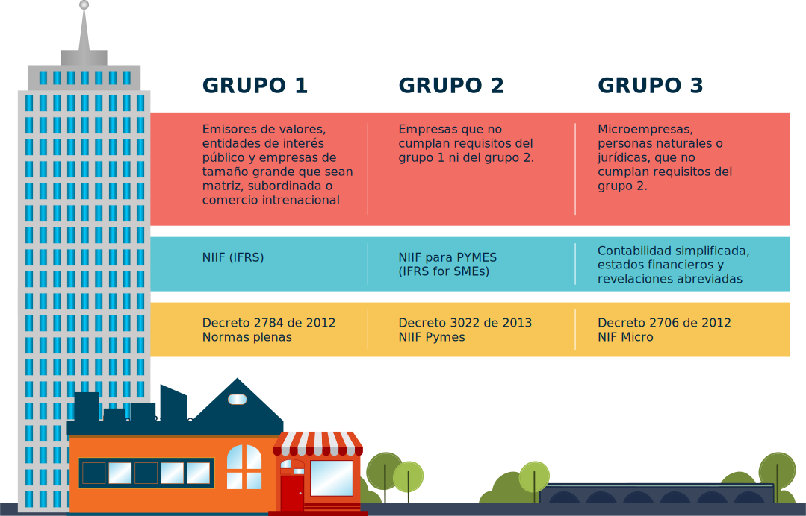
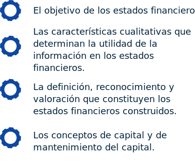

Introducción
Las NIF para Microempresas son un compendio de requisitos establecidos desde el gobierno nacional mediante el Decreto 2706 de 2012 con el fin de establecer unos criterios para la conversión de estas organizaciones a las NIIF. Este un paso fundamental para ingresar al mundo globalizado de la economía competitiva, tener la oportunidad de participar en esta dinámica económica acelerada y acceder a la participación de este tipo de empresas en el mercado.
Para las microempresas es necesario adaptarse a estos criterios establecidos internacionalmente lo que implica una disciplina en la clasificación, registro, elaboración de informes y presentación de la información financiera para lograr estandarizar los procesos contables de tal manera que la información financiera sea fiable, veraz y de cuenta del estado real de la organización.
1. Identificación de las NIIF para microempresas
La identificación de la NIF para microempresas se realiza mediante el acercamiento al marco legal y conceptual que dan origen al Decreto 2706 de 2012 como instrumento legal que fundamenta su origen e implementación.
Identificación y Clasificación de las NIIF para Colombia
1.1 Marco conceptual
El Marco Conceptual del IASB fue aprobado por el Consejo del IASC en abril de 1989 para su publicación en julio de 1989, y adoptada por el IASB en abril de 2001. Este marco establece los conceptos que subyacen en la preparación y presentación de estados financieros para los usuarios externos.
El marco tiene que ver con:
Los estados financieros tienen como fin proporcionar información sobre la posición financiera, desempeño y cambios en la situación financiera de una organización que sea útil a una variedad de usuarios al tomar sus decisiones económicas.
1.2 Marco legal
Esta dinámica de las normas internacionales de información financiera (NIIF) tiene todo un soporte conceptual y legal mediante la IASB/IFRS y que para Colombia ha sido concebida en tres grupos y tenido la siguiente clasificación:
Estructura de la NIF para Microempresas
-
Microempresas
-
Concepto y principios generales
-
Presentación de estados financieros
-
Estado de situación financiera
-
Estado de resultados
-
Inversiones
-
Cuentas por cobrar
-
Inventarios
-
Propiedades planta y equipo
-
Obligaciones financieras y cuentas por pagar
-
Obligaciones laborales
-
Ingresos
-
Arrendamientos
-
Entes económicos en etapa de formación
-
Aplicación por primera vez de la norma de información financiera para las microempresas
Para emitir el decreto de cumplimiento a la NIF para Microempresas se tuvo en cuenta el siguiente marco legal.
Por la cual se dictan disposiciones para promover el desarrollo de las micro, pequeñas y medianas empresas.
Por la cual se modifica la ley 590 de 2000sobre promoción del desarrollo de la micro, pequeña y mediana empresa Colombiana.
Por el cual se expide el Plan nacional de desarrollo 2006 - 2010.
Por el cual se modifica parcialmente el Decreto 2649 de 1993.
Por la cual se expide la ley de formalización y generación de empleo.
Por el cual se expide en Plan Nacional de Desarrollo 2010 - 2014.
1.3 Enfoque a las NIIFs en Colombia
Estos estados financieros preparados con este propósito cubren las necesidades comunes de la mayoría de los usuarios. Sin embargo, los estados financieros no proporcionan toda la información que los usuarios pueden necesitar para tomar decisiones económicas, ya que en gran medida reflejan los efectos financieros de sucesos pasados y no necesariamente proporcionan información financiera.
Con el fin de cumplir con sus objetivos, los estados financieros se preparan sobre la base de valores devengados. Los estados financieros se preparan normalmente sobre la base de que la entidad es una empresa en marcha y siguen en funcionamiento en el futuro.
1.4 Características cualitativas
Son atributos que hacen que la información suministrada en los estados financieros, sea útil a una variedad de usuarios. Las principales características cualitativas son:
a
Comprensibilidad: es necesario que la información financiera sea clara y fiable lo que hace que sea comprendida por una variedad de usuarios.
b
Relevancia: esta cualidad es esencial porque su importancia le permite ser fundamental en la toma de decisiones económicas siendo clave para evaluar sucesos pasados, presentes y/o futuros.
c
Materialidad o Importancia Relativa: la información financiera es material y por tanto relevante, por ello su importancia pues en su esencia permite obtener informes veraces y claros por lo que es muy importante anotar que ella no puede ser omitida y7o errada pues afectará los resultados que implica y por ende la toma de decisiones.
d
Fiabilidad: esta característica está ligada a la anterior, pues hace referencia a la necesidad de registrar la información real y verazmente sin sufrir adulteraciones para que ella represente lo que verdaderamente es y dio lugar a su realización.
e
Esencia sobre forma: las transacciones y/o hechos económicos deben ser registrados de acuerdo a dos criterios su forma legal y realidad económica.
f
Prudencia: orientada en el registro de los hechos económicos debe realizarse de acuerdo a su valor económico sin sobreestimar activos y pasivos y subestimar ingresos y gastos.
g
Integridad: la información debe ser registrada de manera que no supere su relevancia y el costo como límites de la fiabilidad.
h
Relevancia: esta cualidad es esencial porque su importancia le permite ser fundamental en la toma de decisiones económicas siendo clave para evaluar sucesos pasados, presentes y/o futuros.
i
Comparabilidad: los estados financieros son un instrumento esencial para evaluar lo sucedido y por ellos deben ser comparables de manera que se identifique la tendencia de la situación financiera y el resultado de sus operaciones.
j
Equilibrio entre costos y beneficio: el obtener la información en tiempo real y oportuno no debe exceder los costos de los beneficios que genera la oportunidad de tomar decisiones en el momento requerido.
Los elementos directamente relacionados con la medición de la posición financiera son los activos, pasivos y patrimonio. Estos se definen:

Un activo es un recurso controlado por la entidad como resultado de acontecimientos pasados y del que el futuro económico se esperan beneficios que fluyan a la entidad.
Un pasivo es una obligación presente de la entidad surgida de sucesos pasados, cuya liquidación se espera que resulte en una salida de la entidad de recursos que incorporen beneficios económicos.
Patrimonio neto es la parte residual de los activos de la entidad, una vez deducidos todos sus pasivos.
Los elementos de ingresos y gastos se definen como sigue:
a) Ingresos son los incrementos en los beneficios económicos durante el período contable en forma de entradas o mejoras de los activos o disminuciones de los pasivos que dan como resultado aumentos del patrimonio neto, distintos de los relacionados con las contribuciones de los propietarios.
b) Gastos son los decrementos en los beneficios económicos durante el período contable en forma de salidas o el agotamiento de activos o incremento de pasivos, produciendo una disminución en el patrimonio neto, distintos de los relacionados con las distribuciones a los propietarios.
Una partida que satisfaga la definición de un elemento debe ser reconocido si: a) es probable que cualquier beneficio económico futuro asociado con la partida llegue o salga de la entidad; y b) la partida tiene un costo o valor que pueda medirse con fiabilidad. La medición es el proceso de determinación de los importes monetarios por los que los elementos de los estados financieros deben ser reconocidos y llevados en el balance y cuenta de resultados. Esto implica la selección de la base particular de valoración.
El concepto de mantenimiento del capital se refiere a cómo una entidad define el capital que busca mantener. Suministra la conexión entre los conceptos de capital y el concepto de ganancia, porque proporciona el punto de referencia por el cual los beneficios se miden, es un prerrequisito para distinguir entre una entidad retorno sobre el capital y la devolución de capital.
Sólo las entradas de activos que excedan las cantidades necesarias para mantener capital pueden ser consideradas como ganancia, y por tanto como rendimiento del capital. Uribe (2011) dice que:
1.5 Objetivos de los estados financieros
El fin de las normas de información financiera es brindar información fidedigna que evidencie la realidad de cada transacción y/o hecho económico y que sea clara y comprensible por los diferentes usuarios de la información contable.
Ramirez (2017), afima que: “De esta manera el objetivo de los estados financieros, debe ser satisfacer las necesidades y/o los interrogantes de la variedad de usuarios de la información financiera, siendo algunos de
ellos propietarios, directores, entidades financieras, acreedores, el Estado, entre otros. Es decir, para unos ese objetivo está relacionado con conocer el resultado de la gestión en sus diferentes variantes como crecimiento, rentabilidad, solvencia, producción, entre otros”.
1.6 Adopción por primera vez grupo 3 microempresas (COLGAAP) - ESFA
En la adopción por primera vez para las microempresas se generan cálculos para registrar y/o ajustar en la presentación del Estado de Situación Financiera (ESFA), referenciando la(s) norma(s) a que se deben acoger en cada paso. Se incluye: disponible, certificaciones – inversiones, deudores, inventarios, gastos pagados por anticipado, resultado de ejercicios anteriores, cargos diferidos, propiedades, planta y equipo, valorizaciones, cuentas por pagar, pasivos por impuestos, revalorización del patrimonio, conciliación patrimonial y presentación del Estado de Situación Financiera (ESFA).
1.7 Microempresa
Se han considerado microempresa según la Ley 590 de 2000, modificada por la Ley 905 de 2004, sin embargo, el artículo 1 del Decreto 3019 de 2013 estableció que se aplicarán estas NIF las microempresas que cumplan la totalidad de los siguientes requisitos:
GRUPO 3. MICROEMPRESAS - REQUISITOS
1.8 Presentación de reportes financieros
NIC 1 PRESENTACIÓN DE ESTADOS FINANCIEROS
Una entidad cuyos estados financieros cumplan las NIIF efectuará, en las notas, una declaración, explícita y sin reservas, de dicho cumplimiento. Una entidad no señalará que sus estados financieros cumplen con las NIIF a menos que satisfagan todos los requerimientos de éstas.
Se presume que la aplicación de las NIIF, acompañada de información adicional cuando sea preciso, dará lugar a estados financieros que proporcionen una presentación razonable. Al elaborar los estados financieros, la gerencia evaluará la capacidad que tiene una entidad para continuar en funcionamiento. Una entidad elaborará los estados financieros bajo la hipótesis de negocio en marcha, a menos que la gerencia pretenda liquidar la entidad o cesar en su actividad, o bien no exista otra alternativa más que proceder de una de estas formas. Cuando la gerencia, al realizar esta evaluación, sea consciente de la existencia de incertidumbres importantes, relativas a eventos o condiciones que puedan aportar dudas significativas sobre la posibilidad de que la entidad siga funcionando normalmente, procederá a revelarlas en los estados financieros.
Una entidad presentará por separado cada clase significativa de partidas similares. Una entidad presentará por separado las partidas de naturaleza o función distinta, a menos que no tengan importancia relativa.
Una entidad no compensará activos con pasivos o ingresos con gastos a menos que así lo requiera o permita una NIIF.
Una entidad presentará un juego completo de estados financieros (incluyendo información comparativa) al menos anualmente.
A menos que las NIIF permitan o requieran otra cosa, una entidad revelará información comparativa respecto del periodo anterior para todos los importes incluidos en los estados financieros del periodo corriente.
Una entidad incluirá información comparativa para la información de tipo descriptivo y narrativo, cuando esto sea relevante para la comprensión de los estados financieros del periodo corriente.
Cuando la entidad modifique la presentación o la clasificación de partidas en sus estados financieros, también reclasificará los importes comparativos, a menos que resulte impracticable hacerlo.
Una entidad identificará claramente los estados financieros y los distinguirá de cualquier otra información publicada en el mismo documento.
La NIC 1 requiere que una entidad presente, en el estado de cambios en el patrimonio, todos los cambios en el patrimonio que proceden de los propietarios. Todos los cambios en el patrimonio
que no proceden de los propietarios (es decir en el resultado integral) se requiere que se presenten en un estado del resultado integral o en dos estados (un estado del resultado separado y un estado del resultado integral).
Dentro de los componentes del resultado integral, no está permitido que se presenten en el estado de cambios en el patrimonio. Una entidad reconocerá todas las partidas de ingreso y gasto de un periodo en el resultado a menos que una NIIF requiera o permita otra cosa.
En las notas:
a). Presentará información acerca de las bases para la preparación de los estados financieros, y sobre las políticas contables específicas utilizadas de acuerdo con los párrafos 117 a 124.
b). Revelará la información requerida por las NIIF que no haya sido incluida en otro lugar de los estados financieros.
c) Proporcionará información que no se presenta en ninguno de los estados financieros, pero que es relevante para entender a cualquiera de ellos.
Siempre que tengan un efecto significativo sobre los importes reconocidos en los estados financieros, una entidad revelará, en el resumen de las políticas contables significativas o en otras notas, los juicios, diferentes de aquéllos que impliquen estimaciones (véase el párrafo 125), que la gerencia haya realizado en el proceso de aplicación de las políticas contables de la entidad.
Una entidad revelará información sobre los supuestos realizados acerca del futuro y otras causas de incertidumbre en la estimación al final del periodo sobre el que se informa, que tengan un riesgo significativo de ocasionar ajustes significativos en el valor en libros de los activos o pasivos dentro del periodo contable siguiente.
Una entidad revelará información que permita que los usuarios de sus estados financieros evalúen los objetivos, las políticas y los procesos que ella aplica para gestionar el capital.
Una entidad revelará información adicional sobre instrumentos financieros con opción de venta clasificados como patrimonio neto.
Algunas características de los Estados Financieros
Evaluar la capacidad que tiene la información de forma individual o en conjunto para influir en las decisiones económicas de los usuarios.
Determinar la capacidad que tiene la entidad para continuar en funcionamiento.
Presentar como mínimo, la información del periodo actual y del anterior, incluyendo todos los importes de los estados financieros respectivos.
La entidad debe guardar una homogeneidad en la estructura y clasificación de las partidas de los estados financieros de periodo a periodo.
Se deben presentar los estados financieros al menos de forma anual.
El objetivo de la información financiera con propósito general constituye el fundamento del marco conceptual de estos estados y de otros aspectos que reconoce la entidad como el reconocimiento, medición, presentación e información por revelar los resultados de la gestión que se derivan lógicamente del objetivo básico financiero.
Los estados financieros, con propósito de información general para sus propietarios, acreedores actuales y potenciales y agencias calificadoras de riesgos (S1.2), son la fuente de información para los hombres de negocio.
Su responsabilidad está a cargo del gerente y del contador, quienes deben certificarlos y acompañarlos del informe del revisor fiscal y de gestión de la gerencia para la aprobación de la junta directiva y su respectiva publicación, antes de presentarlos a los órganos de decisión y su respectiva discusión en las juntas de socios o asambleas generales.
El ente económico está funcionalmente compuesto por cuatro elementos: los recursos, los procesos, los productos y los clientes, quienes producen los resultados de la gestión medidos en la eficiencia, eficacia y productividad. Los recursos que administra una entidad son variados, tales como: el capital de trabajo, los bienes de capital, inversiones fijas o gastos preoperativos.
Los procesos de administración de planta deben estar debidamente documentados y probados con las mejores prácticas de negocio; entre los más relevantes están los protocolos de producción, seguridad industrial, alistamiento de maquinaria y mantenimiento, los cuales deben generar la eficiencia. Las NIIF ofrecen en nuevo lenguaje financiero común para una comunidad globalizada y con un alto grado de conocimiento en los negocios.
Los estados financieros también muestran los resultados de la gestión llevada a cabo por la gerencia, dan cuenta de la responsabilidad en la gestión de los recursos confiados a la misma (S2.3).
La entidad mantendrá la presentación y clasificación de las partidas de los estados financieros en forma uniforme de un periodo a otro, a menos que se presente un cambio importante en la naturaleza de la actividad y se ponga de manifiesto otra presentación o clasificación (3.11).
A continuación, se presentan los elementos que integran los estados financieros con NIIF para pymes y organizaciones plenas.
Elementos de los estados financieros
La entidad presentará por separado cada clase significativa de partidas similares, a menos que tengan importancia relativa (S3.15). El conjunto completo de estados financieros de una entidad incluye:
-
Estado de Situación Financiera en la fecha sobre la cual se informa.
-
Estado del resultado integral o un estado de resultado separado.
-
Notas.
Una entidad debe efectuar en nota una declaración, explícita y sin reservas, de cumplimiento de las NIIF para pymes (S3.3). La gerencia que usa NIIF para pymes incluye en los estados financieros la evaluación de la capacidad de la entidad para continuar en funcionamiento (hipótesis de negocio en marcha) (S3.8). La frecuencia de presentación del juego completo de estados financieros, incluyendo los comparativos, será al menos anual (S3.10).
Objetivos de los Estados Financieros
Elementos de los estados financieros
NIIF para pymes
Proporcionar información financiera sobre la situación financiera, el rendimiento y los flujos de efectivo de la entidad que sea útil para la toma de decisiones económicas de usuarios que no están en condiciones de exigir informes a su medida
NIIF plenas
Proporcionar información financiera sobre la entidad que informa que sea útil a los inversores, prestamistas y otros acreedores existentes y potenciales para la toma de decisiones.
Estado de Situación Financiera
Antes conocido como balance general. Este debe incluir como mínimo las siguientes partidas:
-
Efectivo y equivalentes al efectivo (S11).
-
Deudores comerciales y otras cuentas por cobrar (S11).
-
Activos financieros [sin incluir los importes mostrados en (a), (b), (j) y (k)] (S11 y S12).
-
Inventarios (S13).
-
Propiedades, planta y equipo (S17).
-
Propiedades de inversión registradas al valor razonable con cambios en resultados (S16).
-
Activos intangibles (S18).
-
Activos biológicos registrados al costo menos la depreciación acumulada y el deterioro del valor (S34).
-
Activos biológicos registrados al valor razonable con cambios en resultados (S34).
-
Inversiones en asociadas (S14).
-
Rendimiento financiero de la empresa, o resultados del periodo.
La entidad presentará por separado cada clase significativa de partidas similares, a menos que tengan importancia relativa (S3.15).
Tablas anexas que describen:
-
Situación financiera
-
Estado de Resultados Integrales
El estado del resultado integral es el mismo estado de resultados adicionados con otros resultados integrales como ganancias y pérdidas en potencia y que se generan en los siguientes ejercicios contables.
2. Fiabilidad en la presentación, revelaciones medición, reconocimiento de activos y pasivos NIC 2 inventarios
El objetivo de esta Norma es prescribir el tratamiento contable de los inventarios. Un tema fundamental en la contabilidad de los inventarios es la cantidad de costo que debe reconocerse como un activo, para que sea diferido hasta que los ingresos correspondientes sean reconocidos. Esta Norma suministra una guía práctica para la determinación de ese costo, así como para el subsiguiente reconocimiento como un gasto del periodo, incluyendo también cualquier deterioro que rebaje el importe en libros al valor neto realizable.
También suministra directrices sobre las fórmulas del costo que se usan para atribuir costos a los inventarios. Los inventarios se medirán al costo o al valor neto realizable, según cual sea menor. Valor neto realizable es el precio estimado de venta de un activo en el curso normal de la operación menos los costos estimados para terminar su producción y los necesarios para llevar a cabo la venta.
El costo de los inventarios comprenderá todos los costos derivados de su adquisición y transformación, así como otros costos en los que se haya incurrido para darles su condición y ubicación actuales. El costo de los inventarios será asignado siguiendo el método de primera entrada primera salida (FIFO) o el coste medio ponderado.
La entidad utilizará la misma fórmula de costo para todos los inventarios que tengan una naturaleza y uso similares. Para los inventarios con una naturaleza o uso diferente, puede estar justificada la utilización de fórmulas de costo también diferentes. El costo de los inventarios de productos que no son habitualmente intercambiables entre sí, así como de los bienes y servicios producidos y segregados para proyectos específicos, se determinará a través de la identificación específica de sus costos individuales.
Cuando los inventarios sean vendidos, el importe en libros de los mismos se reconocerá como gasto del periodo en el que se reconozcan los correspondientes ingresos de operación. El importe de cualquier disminución de valor, hasta alcanzar el valor neto realizable, así como todas las demás pérdidas en los inventarios, serán reconocidas como gasto en el periodo en que ocurra la disminución o la pérdida.
El importe de cualquier reversión de la disminución de valor que resulte de un incremento en el valor neto realizable, se reconocerá como una reducción en el valor de los inventarios, que hayan sido reconocidos como gasto, en el periodo en que la recuperación del valor tenga lugar.
NIC 16 PROPIEDADES, PLANTA Y EQUIPO
El objetivo de esta norma es prescribir el tratamiento contable de propiedades, planta y equipo, de forma que los usuarios de los estados financieros puedan conocer la información acerca de la inversión que la entidad tiene en sus propiedades, planta y equipo, así como los cambios que se hayan producido en dicha inversión. Los principales problemas que presenta el reconocimiento contable de propiedades, planta y equipo son la contabilización de los activos, la determinación de su importe en libros y los cargos por depreciación y pérdidas por deterioro que deben reconocerse con relación a los mismos.
Las propiedades, planta y equipo son los activos tangibles que: a) posee una entidad para su uso en la producción o suministro de bienes y servicios, para arrendarlos a terceros o para propósitos administrativos; y b) se esperan usar durante más de un periodo.
Un elemento de propiedades, planta y equipo se reconocerá como activo si, y sólo si: a) sea probable que la entidad obtenga los beneficios económicos futuros derivados del mismo; y b) el costo del activo para la entidad pueda ser valorado con fiabilidad.
Medición en el reconocimiento: Un elemento de propiedades, planta y equipo, que cumpla las condiciones para ser reconocido como un activo, se medirá
por su costo. El costo de un elemento de propiedades, planta y equipo será el precio equivalente al efectivo en la fecha de reconocimiento. Si el pago se aplaza más allá de los términos normales de crédito, la diferencia entre el precio equivalente al efectivo y el total de los pagos se reconocerá como intereses a lo largo del periodo del crédito a menos que tales intereses se capitalicen de acuerdo con la NIC 23.
El costo de los elementos de propiedades, planta y equipo comprende:

Su precio de adquisición, incluidos los aranceles de importación y los impuestos indirectos no recuperables que recaigan sobre la adquisición, después de deducir cualquier descuento o rebaja del precio.
Todos los costos directamente relacionados con la ubicación del activo en el lugar y en las condiciones necesarias para que pueda operar de la forma prevista por la gerencia.
La estimación inicial de los costos de desmantelamiento o retiro del elemento, así como la rehabilitación del lugar sobre el que se asienta, cuando constituyan obligaciones en las que incurre la entidad como consecuencia de utilizar el elemento durante un determinado periodo, con propósitos distintos del de la producción de inventarios durante tal periodo.
Medición después del reconocimiento: La entidad elegirá como política contable el modelo del costo o el modelo de revaluación, y aplicará esa política a todos los elementos que compongan una clase de propiedades, planta y equipo.
Modelo de costo: Con posterioridad a su reconocimiento como activo, un elemento de propiedad, planta y equipo se contabilizará por su costo menos la depreciación acumulada y el importe acumulado de las pérdidas por deterioro del valor.
Modelo de reevaluación: Con posterioridad a su reconocimiento como activo, un elemento de propiedades, planta y equipo cuyo valor razonable pueda medirse con fiabilidad, se contabilizará por su valor revaluado, que es su valor razonable, en el momento de la revaluación, menos la depreciación acumulada y el importe acumulado de las pérdidas por deterioro de valor que haya sufrido.
Las revaluaciones se harán con suficiente regularidad, para asegurar que el importe en libros, en todo momento, no difiera significativamente del que podría determinarse utilizando el valor razonable al final del periodo sobre el que se informa. Si se incrementa el importe en libros de un activo como consecuencia de una revaluación, este aumento se reconocerá directamente en otro resultado integral y se acumulará en el patrimonio, bajo el encabezamiento de superávit de revaluación. Sin embargo, el incremento se reconocerá en el resultado del periodo en la medida en que sea una reversión de un decremento por una revaluación del mismo activo reconocido anteriormente en el resultado del periodo.
Cuando se reduzca el importe en libros de un activo como consecuencia de una revaluación, tal disminución se reconocerá en el resultado del periodo. Sin embargo,
El método de depreciación utilizado reflejará el patrón con arreglo al cual se espera que sean consumidos, por parte de la entidad, los beneficios económicos futuros del activo. El valor residual de un activo es el importe estimado que la entidad podría obtener actualmente por la disposición del elemento, después de deducir los costos estimados por tal disposición, si el activo ya hubiera alcanzado la antigüedad y las demás condiciones esperadas al término de su vida útil.
Para determinar si un elemento de propiedades, planta y equipo ha visto valor, la entidad aplicará la NIC 36 Deterioro del Valor de los activos. El importe en libros de un elemento de propiedades, planta y equipo se dará de baja en cuentas: a) por su disposición; o b) cuando no se espere obtener beneficios económicos futuros por su uso o disposición.
la disminución se reconocerá en otro resultado integral en la medida en que existiera saldo acreedor en el superávit de revaluación en relación con ese activo.
Depreciación es la distribución sistemática del importe depreciable de un activo a lo largo de su vida útil. Importe depreciable es el costo de un activo, o el importe que lo haya sustituido, menos su valor residual. Se depreciará de forma separada cada parte de un elemento de propiedades, planta y equipo que tenga un costo significativo con relación al costo total del elemento. El cargo por depreciación de cada periodo se reconocerá en el resultado del periodo, salvo que se haya incluido en el importe en libros de otro activo.
3. Deterioro recuperable
El CTPC hace la aclaración que el “valor recuperable y/o deterioro recuperable” está orientado a la pérdida del valor causada por deterioro. Y se establece para revertir el deterioro como se describe en el párrafo 2.36. Al final de cada periodo sobre el que se informa la microempresa evaluará si existe evidencia objetiva de deterioro o de recuperación del valor de los activos según la norma. Cuando exista evidencia objetiva de deterioro del valor, la microempresa reconocerá inmediatamente en cuentas de resultado una pérdida por deterioro de valor.
Para medir la pérdida por deterioro se debe tener en cuenta la diferencia entre el valor en libros del activo y la mejor estimación si el activo llegare a venderse o realizar es lo que contablemente se debe manejar porque al realizar a parir del valor realizable o de venta
4. Base contable de acumulación o devengo
Una microempresa elaborará sus estados financieros utilizando la base contable de causación (acumulación o devengo). Los efectos de las transacciones y demás sucesos se reconocen cuando ocurren y no cuando se recibe o se paga dinero u otro equivalente al efectivo en los periodos con los cuales se relacionan.
5. Correcciones de errores de periodos anteriores
Son errores o correcciones de periodos anteriores las omisiones y inexactitudes de estados financieros de una microempresa que surgen de no emplear, o de utilizar erróneamente la información fiable que:
Estaba disponible cuando los estados financieros para esos periodos estaban autorizados para emitirse.
Podría esperarse razonablemente que se hubiera conseguido y tenido en cuenta para la elaboración y presentación de esos estados financieros.
El efecto de las correcciones de periodos anteriores se reconocerá en resultados del mismo periodo en que el error haya sido detectado. La microempresa deberá revelar la naturaleza del error, el monto de la acción y su efecto para cada uno de los rubros en los estados financieros.
NIC 8 POLÍTICAS CONTABLES, CAMBIOS EN CONTABILIDAD
Las Estimaciones y Errores
El objetivo de esta Norma es prescribir los criterios para seleccionar y cambiar políticas contables, junto con el tratamiento contable y la revelación de cambios en las políticas contables, cambios en la contabilidad estimaciones y correcciones de errores. La norma tiene por objeto aumentar la relevancia y fiabilidad de los estados financieros de la entidad, y la comparabilidad de los estados financieros en el tiempo y con los estados financieros de otras entidades.
LAS POLÍTICAS CONTABLES
Políticas contables son los principios, bases, convenciones, reglas y prácticas aplicadas por la entidad en preparación y presentación de estados financieros.
Cuando una Norma sea específicamente aplicable a una transacción, otro evento o condición, la política o políticas contables aplicadas a esa partida.
se determinarán mediante la aplicación de las NIIF y teniendo en cuenta cualquier Guía de Implementación relevante emitida por el IASB de las NIIF.
En ausencia de una Norma o Interpretación que sea aplicable específicamente a una transacción, otro evento o condición, la gerencia deberá usar su juicio para desarrollar y aplicar una política contable, a fin información que es relevante y confiable. Al hacer la gestión sentencia se refieren a, y considerar la aplicabilidad de las siguientes fuentes en orden descendente:
Los requisitos y la orientación en las NIIF se ocupan de cuestiones similares y afines.
Las definiciones, los criterios de reconocimiento y valoración de los activos, pasivos, ingresos y gastos en el Marco.
La entidad seleccionará y aplicará sus políticas contables para transacciones similares y otros eventos y condiciones, a menos que específicamente una NIIF requiera o permita la clasificación de partidas para las que las diferentes políticas puedan ser apropiadas. Si una NIIF requiere o permite esta categorización, una política contable adecuada debe ser seleccionada y aplicada de conformidad a cada categoría.
Una entidad cambia una política contable sólo si el cambio:
a) es requerida por una NIIF, o b) los resultados en los estados financieros suministren información más relevante y fiable sobre los efectos de transacciones, otros eventos o condiciones sobre la situación financiera de la entidad, el rendimiento financiero o en efectivo los flujos.
La entidad contabilizará un cambio en la política contable resultante de la aplicación inicial de las NIIF de conformidad con las disposiciones transitorias específicas, si las hubiere, en que las NIIF. Cuando una entidad cambie una política contable sobre la aplicación inicial de una NIIF que no incluye disposiciones transitorias específicas la aplicación de esta modificación, o cambia una política contable voluntaria, se aplicará el cambio a posteriori. Sin embargo, un cambio en la política contable se aplicará retroactivamente, salvo en la medida en que se impracticable determinar los efectos específicos del período o el efecto acumulado del cambio.
CAMBIO EN LAS ESTIMACIONES CONTABLES
El uso de estimaciones razonables es una parte esencial de la preparación de los estados financieros y no menoscabar su fiabilidad. Un cambio en una estimación contable es un ajuste del valor en libros de un activo o un pasivo, o el importe del consumo periódico de un activo, que los resultados de la evaluación del estado actual de, y los beneficios futuros esperados y las obligaciones asociadas con los activos y pasivos. Los cambios en la contabilidad resultado de las estimaciones de nueva información o nuevos acontecimientos y, en consecuencia, no son correcciones de errores.
El efecto de un cambio en una estimación contable, se reconocerá de forma prospectiva incluyendo las utilidades o perdidas en el resultado de: a) el período del cambio, si el cambio afecta a ese período sólo, o b) el período del cambio y los futuros, si el cambio afecta a ambos. Antes de errores de ejercicios
Errores de periodos anteriores son las omisiones e inexactitudes en los estados financieros de la entidad para una o más períodos anteriores derivadas de la falta de uso o mal uso de información fiable que: a) estaba disponible cuando los estados financieros para los períodos fueron autorizados para su emisión, y b) podría esperarse razonablemente que se ha conseguido y tenido en cuenta en la preparación y presentación de dichos estados financieros.
Tales errores incluyen los efectos de errores aritméticos, errores en la aplicación de políticas contables, o malas interpretaciones de los hechos, y el fraude. Salvo en la medida en que sea impracticable determinar el efecto específico del período o acumulativos del efecto del error, la entidad corregirá los errores materiales del período anterior a posteriori en el primer grupo de estados financieros autorizados para su emisión después de su descubrimiento por:
a) la reexpresión de las cifras comparativas para el período anterior(es) presentado(s) en el que se produjo el error, o b) si el error ocurrió antes del ejercicio inmediatamente anterior, corrigiendo los saldos iniciales de activos, pasivos y patrimonio para el ejercicio inmediatamente anterior.
Omisiones o inexactitudes de partidas son materiales si pueden, individual o colectivamente, influir en las decisiones económicas tomadas por los usuarios sobre la base de los estados financieros. La importancia relativa depende del tamaño y de la omisión o inexactitud, enjuiciada en las circunstancias. El tamaño o la naturaleza del tema, o una combinación de ambas, podría ser el factor determinante.
NIC 10 HECHOS OCURRIDOS DESPUÉS DEL PERIODO SOBRE EL QUE SE INFORMA
El objetivo de esta Norma es prescribir: a) cuándo una entidad debería ajustar sus estados financieros por hechos ocurridos después del periodo sobre el que se informa; y b) la información a revelar que una entidad debería efectuar respecto a la fecha en que los estados financieros fueron autorizados para su publicación, así como respecto a los hechos ocurridos después del periodo sobre el que informa.
La Norma requiere también que una entidad no debería elaborar sus estados financieros bajo la hipótesis de negocio en marcha, si los hechos ocurridos después del periodo sobre el que informa indican que dicha hipótesis no resulta apropiada.
Los hechos ocurridos después del periodo sobre el que informa son todos aquellos eventos, ya sean favorables o desfavorables, que se han producido entre el final del periodo sobre el que informa y la fecha de autorización de los estados financieros para su publicación. Pueden identificarse dos tipos de eventos:
Aquellos que proporcionan evidencia de las condiciones que existían al final del periodo sobre el que informa (hechos ocurridos después del periodo sobre el que se informa que implican ajuste).
Aquellos que son indicativos de condiciones que han aparecido después del periodo sobre el que se informa (hechos ocurridos después del periodo sobre el que se informa que no implican ajuste). Una entidad ajustará los importes reconocidos en sus estados financieros, para reflejar la incidencia de los hechos ocurridos después del periodo sobre el que se informa que impliquen ajustes.
Una entidad no ajustará los importes reconocidos en sus estados financieros, para reflejar hechos ocurridos después del periodo sobre el que se informa que no impliquen ajustes. Si hechos ocurridos después del periodo sobre el que se informa que no implican ajuste son materiales, no revelar esta información puede influir en las decisiones económicas que los usuarios puedan tomar sobre la base de los estados financieros.
Por consiguiente, una entidad revelará la siguiente información sobre cada categoría significativa de hechos ocurridos después del periodo sobre el que se informa que no implican ajuste: a) la naturaleza del evento; y b) una estimación de sus efectos financieros, o un pronunciamiento sobre la imposibilidad de realizar tal estimación. Si, después del periodo sobre el que se informa, una entidad recibiese información acerca de condiciones que existían al final del periodo sobre el que se informa, actualizará la información a revelar relacionada con esas en función de la información recibida.
Actividad didáctica

¡Pon a prueba tu conocimiento!
La siguiente actividad tiene como propósito validar los conocimientos adquiridos sobre Aplicación de Normas de Información Financiera NIIF para microempresas
IniciarGlosario
Análisis de ciclo de vida del producto:es el ciclo en que este existe desde su concepción hasta que es abandonado.
Administración de la Base de datos:motivar la cultura y crear conciencia en el manejo de la base de datos en las organizaciones.
Benchmarking:proceso de comparar y medir continuamente una organización con líderes del negocio (globalmente) y obtener información para mejorar desempeño.
Cadena de valor y sus eslabones:conjunto de actividades interrelacionadas creadoras de valor. Análisis de actividades, base para el sistema de costos.
Costeo ABC (Activity Based Costing):las actividades se encadenan en conjuntos que forman procesos.
Cuadro de Mando integral (Balance Scorecard):es una herramienta que interrelaciona los indicadores de control tradicionales financieros con otros no financieros, para medir en conjunto los logros de los objetivos estratégicos desde los puntos de: clientes, accionistas, procesos internos y el recurso humano.
Cualidades de Liderazgo:habilidades que le permiten al Contador Profesional asumir posición de influencia mediante la consecución y apalancamiento de diversidad de recursos que orientan los problemas y las oportunidades través de la organización.
Experticia profesional:son las habilidades técnicas profesionales que tienen los contadores y que hacen parte de su capacidad única para entender una organización desde una perspectiva que no tienen otros profesionales. "
FASB:Financial Accounting Stándard Board. Junta Estándar de Contabilidad Financiera.
FMI:Fondo Monetario Internacional.
IAS:International Standard Accounting. Contabilidad Estándar Internacional.
IASC:International Accounting Stándards Committee. Comité Internacional de Estándares de Contabilidad.
IASB:International Financial Reporting Standards. Normas Internacionales de Información Financiera.
Importe:valor a registrar como resultado de un hecho económico.
Indicadores de Gestión:establecer “medidores” que reflejen resultados actuales y potenciales.
IOSCO:Organización Internacional de Comisiones de Valores.
Medición:proceso de determinación de los importes monetarios por los que se reconocen y llevan contablemente los elementos de los estados financieros, para su inclusión en el balance (estado de situación financiera) y el estado de resultados (estado del resultado integral).
NCI:Normas Internacionales de Contabilidad.
NCIF:Normas de Convergencia de Información Financiera.
NIIF:Normas Internacionales de Información Financiera.
Perspectiva amplia de Negocios:entendimiento amplio de las organizaciones, su Industria y las prácticas de contabilidad Gerencial, así como la aplicabilidad.
Planeamiento estratégico:Enfocado al cumplimiento de la Visión y Misión.
Presupuesto como elemento de control de Gestión:herramienta de uso de forma dinámica con el concepto de presupuesto flexible.
Reconocimiento:proceso de incorporación, en el balance (estado de situación financiera) o en el estado de resultados (estado del resultado integral), de una partida que cumpla la definición del elemento correspondiente y que satisfaga los siguientes criterios para su reconocimiento: (a) que sea probable que cualquier beneficio económico asociado con la partida llegue a, o salga de la entidad, y (b) el elemento tiene un costo o valor que pueda ser medido con fiabilidad.
Subsidiaria:es una entidad donde la controladora [casa matriz] ha hecho sus inversiones para obtener beneficios en el futuro económico.
Target Costing:constituye una herramienta que trata de asegurar una rentabilidad de la empresa antes de lanzar un producto. Es una técnica de gestión de costos, si el objetivo es conseguir un determinado beneficio, la única forma de lograrlo es a través de la optimización de los costos.
medida de rendimiento de la empresa que indica cuánto valor se crea con el capital invertido.
Material complementario
| Autor, (año del documento o material), Nombre del documento o material. | Tipo de material ( Video, capítulo de libro, articulo, otro) | Enlace del Recurso o Archivo del documento o material |
|---|---|---|
| Guía de Implementación Relevante emitida por IASB de las NIIF | Documento | Descargar |
| Decreto 2706 de 2012 | Documento | Descargar |
| Directrices para la Contabilidad e Información Financiera de las Pequeñas y Mediana Empresas, orientación nivel 3 | Documento | Descargar |
| NIIF para Microempresas – NIIF para Microempresas con ejercicios de aplicación | Documento | Descargar |
Referencias bibliográficas
Fierro, M. Á. M. (2015). Contabilidad general con enfoque niif para las pymes (5a. ed.). Retrieved from https://ebookcentral-proquest-com.bdigital.sena.edu.co
Godoy, R. (2018). Adopción por primera vez a las niif-esfa : Plenas, pymes y microempresas. Retrieved fromhttps://ebookcentral-proquest-com.bdigital.sena.edu.co
MINCIT, (2012). Decreto 2706 de 2012. Página Web Normas de Información Financiera, www.niif.com.co: https://niif.com.co/decreto-2706-2012/marco-tecnico-nif-grupo-3
MinCIT, (2013). Guía general de aplicación por primera vez del marco técnico normativo de información financiera para las microempresas. Página webhttp://www.comunidadcontable.com/BancoMedios/Documentos%20PDF/guia%20implementaci%C3%B3n%20por%20primera%20vez%20microempresas%202.pdf
Ramírez, (2017). NIIF para Microempresas. Normas de Información Financiera para Microempresas con ejercicios de aplicación. Universidad Libre. Bogotá y Cali. Grupo de Investigación, Gestión y Apoyo a Mipymes. Página web Universidad Libre de Colombia http://www.unilibre.edu.co/bogota/pdfs/2017/NIF-MICROEMPRESAS.pdf.
Uribe, M. L. R. (2011). Enfoque a las normas internacionales de contabilidad en colombia : Niifs. Retrieved from https://ebookcentral-proquest-com.bdigital.sena.edu.co